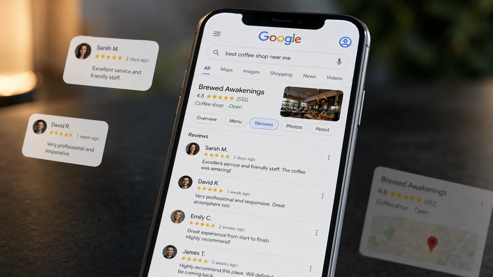

Calificaciones de Google: cómo impactan en la percepción del consumidor y en el crecimiento de tu negocio
Hay negocios que invierten todos los meses en publicidad, redes sociales, contenido y posicionamiento, pero pierden clientes en el último paso: cuando una persona busca la empresa en Google y encuentra una calificación baja, pocas reseñas o comentarios negativos sin responder.
Las calificaciones de Google funcionan como una validación pública de la promesa de una empresa. Transmiten confianza, consistencia, calidad de atención y capacidad para resolver problemas.
En TrendMakers trabajamos la reputación digital como parte del sistema de crecimiento de una marca.

Sistema de reputación digital con Google Business Profile, experiencia del cliente y automatización
El consumidor puede haber visto un anuncio atractivo, visitado una buena página web o recibido una propuesta comercial convincente. Sin embargo, antes de comprar, reservar o comunicarse, probablemente quiera confirmar algo más importante: qué experiencia tuvieron otras personas.
Analizamos qué percibe el consumidor, identificamos los puntos que generan malas experiencias y diseñamos procesos para conseguir más reseñas auténticas, responder mejor y transformar la opinión de los clientes en una ventaja competitiva.
1. Cuando el consumidor conoce tu negocio, pero busca una segunda opinión
En muchos procesos de compra, Google se convierte en una instancia de validación. La persona descubre una empresa a través de una campaña, una recomendación, una publicación o una búsqueda y, antes de avanzar, revisa su perfil.
Allí observa rápidamente:
- La calificación promedio y la cantidad total de reseñas.
- La fecha de los comentarios más recientes.
- Las experiencias positivas y negativas.
- Las respuestas de la empresa y las fotografías de clientes.
- La información sobre horarios, ubicación y servicios.
Una empresa con una puntuación alta, reseñas recientes y respuestas profesionales transmite actividad, confianza y control. Otra con pocas opiniones, comentarios antiguos o reclamos ignorados puede generar incertidumbre, incluso cuando su servicio real sea bueno.
2. Lo que una calificación comunica antes de que el cliente te contacte
La percepción no depende solamente del número de estrellas. El consumidor interpreta un conjunto completo de señales:
- Calificación promedio: funciona como una primera señal de calidad.
- Volumen de reseñas: demuestra que diferentes clientes atravesaron la experiencia.
- Recencia: confirma que el negocio continúa activo.
- Contenido y consistencia: permiten entender qué aspectos se repiten.
- Respuestas de la empresa: muestran cómo se comunica y actúa ante un problema.
- Autenticidad: los comentarios específicos y variados suelen ser más creíbles.
Un consumidor no busca necesariamente una empresa sin críticas. Busca señales que le permitan reducir el riesgo de equivocarse. La reputación no se construye ocultando los problemas, sino demostrando que la empresa sabe gestionarlos.
3. Cómo las reseñas impactan en la visibilidad y en la conversión
Las calificaciones influyen en dos momentos: primero en la visibilidad local y después en la conversión. Una vez que el negocio aparece en los resultados, la reputación ayuda al consumidor a decidir qué perfil abrir, a quién llamar, dónde reservar o qué página visitar.
- Más clics desde los resultados de búsqueda.
- Más consultas telefónicas o por WhatsApp.
- Mayor intención de visitar el local.
- Menor percepción de riesgo antes de comprar.
- Mejor tasa de conversión de campañas y acciones comerciales.
- Mayor confianza frente a competidores menos conocidos.
La publicidad consigue atención. Las reseñas ayudan a convertir esa atención en confianza.
4. El problema de esperar que las reseñas aparezcan solas
Muchas empresas completan la venta y esperan que, eventualmente, alguien deje una opinión. El resultado suele ser una reputación desactualizada y poco representativa. Un cliente satisfecho puede continuar con su día sin publicar nada, mientras que una persona descontenta tiene una motivación inmediata para expresarse.
- Clientes satisfechos que nunca reciben una invitación.
- Solicitudes improvisadas o inconsistentes entre sucursales.
- Comentarios negativos que permanecen semanas sin respuesta.
- Falta de registro e indicadores para medir la evolución.
La reputación digital no debería depender de la memoria del equipo. Necesita un proceso consistente, medible y alineado con la experiencia real del cliente.
5. De las reseñas aisladas a una estrategia de reputación
Primero es necesario entender qué está viviendo el consumidor y qué comentarios se repiten. El diagnóstico puede incluir auditoría de Google Business Profile, análisis de calificación, volumen y frecuencia, clasificación de comentarios, comparación con competidores y detección de procesos internos que generan reclamos.
A partir de ese análisis, el sistema puede contemplar:
- Momentos específicos para solicitar una reseña.
- Mensajes alineados con el tono de la marca.
- Enlaces directos y códigos QR para reducir fricción.
- Automatizaciones posteriores a una compra, visita o servicio.
- Protocolos para responder y escalar reclamos sensibles.
- Dashboards para seguir la evolución de la reputación.
El objetivo no es presionar al cliente ni condicionar su opinión. Es facilitar que quienes tuvieron una experiencia real puedan compartirla de manera auténtica.
6. Cuando la automatización ayuda a construir reputación
Después de una compra, atención, entrega o finalización de un servicio, el sistema puede activar una comunicación en el momento adecuado.
- Solicitudes por email o WhatsApp con acceso directo al perfil.
- Recordatorios moderados cuando el cliente no respondió.
- Alertas internas ante reseñas negativas.
- Clasificación por tema, sucursal o servicio.
- Reportes de frecuencia, sentimiento y motivos de satisfacción.
- Integración de reseñas positivas en la web.
La automatización debe asegurar que el pedido llegue en el momento correcto, con lenguaje humano. Comprar reseñas, usar perfiles falsos o buscar exclusivamente opiniones positivas perjudica la credibilidad; la reputación sostenible se construye con experiencias reales.
7. Cómo responder las reseñas positivas
Una buena respuesta debería agradecer el tiempo, mencionar un detalle concreto de la experiencia, mantener el tono de la marca, evitar fórmulas idénticas, reforzar el atributo valorado e invitar al cliente a regresar cuando resulte natural.
Cada respuesta queda visible para otros consumidores. No se responde solamente a quien dejó la opinión: también se comunica con todas las personas que investigarán el negocio en el futuro.
8. Cómo gestionar una reseña negativa sin empeorar el problema
El objetivo no debería ser ganar una discusión pública, sino demostrar criterio, empatía y voluntad de resolución.
- Reconocer la preocupación sin acusaciones ni confrontaciones.
- No revelar información privada.
- Explicar lo necesario sin extenderse innecesariamente.
- Ofrecer un canal concreto para revisar el caso.
- Mantener un tono profesional, incluso ante comentarios injustos.
Si varias personas mencionan demoras, mala comunicación o problemas con entregas, el problema no está únicamente en Google: está en el proceso. La gestión de reputación empieza escuchando lo que las reseñas muestran.
9. Qué cambia cuando la reputación se gestiona con sistema
- Mayor volumen de reseñas auténticas y representativas.
- Respuestas más rápidas y consistentes.
- Mejor percepción antes del primer contacto.
- Mayor confianza en campañas y acciones comerciales.
- Identificación temprana de problemas operativos.
- Información concreta para mejorar productos y servicios.
- Mejor coordinación entre marketing, atención y ventas.
Las reseñas dejan de ser un resultado aislado y pasan a convertirse en una fuente continua de información para tomar decisiones.
Conclusión: tu reputación ya está participando de la venta
La percepción se forma cuando una persona encuentra el negocio en Google, compara alternativas, observa las estrellas, lee experiencias y analiza cómo responde la empresa. Por eso, la calificación puede afectar la visibilidad, la confianza, la conversión y el valor percibido de la marca.
En TrendMakers ayudamos a transformar las reseñas en un activo de crecimiento: analizamos la percepción del consumidor, optimizamos Google Business Profile, diseñamos procesos de solicitud, automatizamos comunicaciones y construimos protocolos de respuesta alineados con la identidad de la marca.
Porque cuando una persona busca tu negocio, tu empresa no es la única que habla. También hablan tus clientes.
Diseñamos un sistema para convertir la experiencia de tus clientes en confianza y crecimiento.